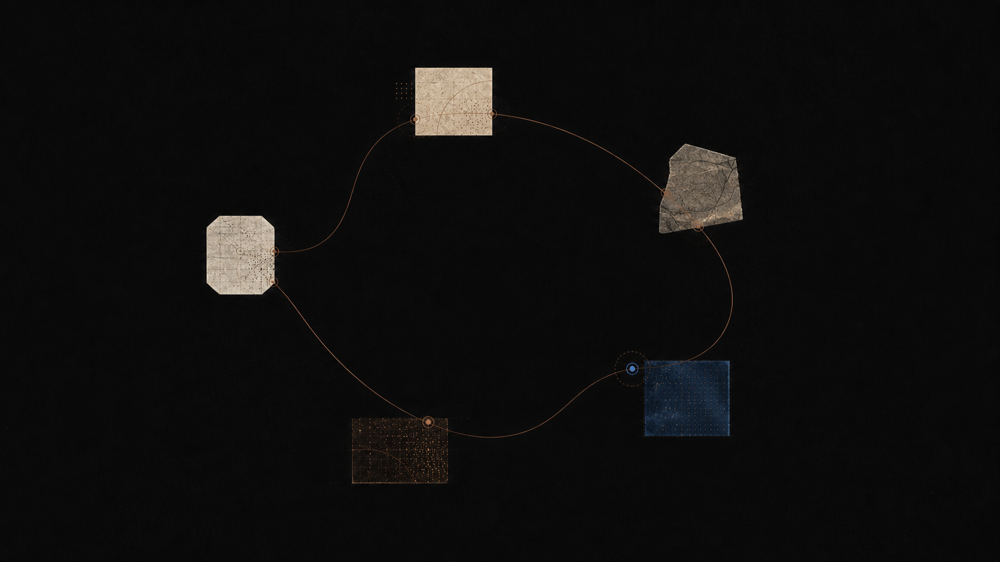

理解，从一个问题开始。
沿着对话、回忆与连接，跟随一个想法慢慢展开。

Socrates 的练习
让问题成为持久的学习练习。
学习不只是累积答案，而是在恰当的时刻重新提出更好的问题。
Socrates 从你所在的地方开始，挑战假设，并帮你建立能留下来的理解。
沿着对话、回忆与连接，跟随一个想法慢慢展开。

Socrates 的练习
学习不只是累积答案，而是在恰当的时刻重新提出更好的问题。
Socrates 从你所在的地方开始，挑战假设，并帮你建立能留下来的理解。